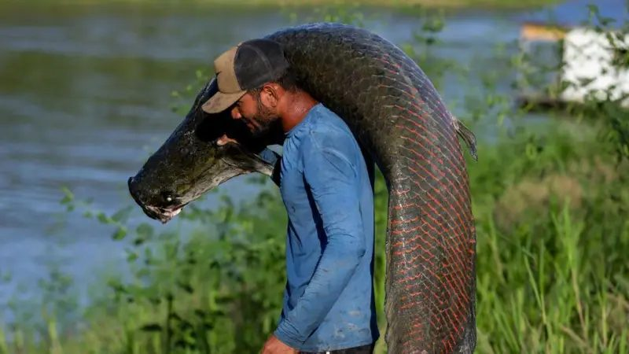

Luxury bags and leather accessories costing thousands of reais, sold in Brazil and in stores in the United States. The use of the thick and resistant skin of the pirarucu — a fish that was once considered threatened with extinction and whose fishing and trade are now controlled — receives support from both the fashion industry and environmental authorities.
The fishing of the species was once prohibited due to predatory exploitation, but today it is seen as an example of sustainable management: the current model involves counting the animals and authorizing the capture of only a portion, guaranteeing the conservation of populations and income for indigenous and riverside communities.
National and international brands emphasize these social and environmental gains to their customers. Osklen, a pioneer in this market, says on its website that the initiative collaborates with the circular economy, "generating income for riverside populations and contributing to the preservation of the Amazon."
But representatives of communities involved in management and experts interviewed by BBC News Brasil say that, although they defend the model as genuinely helping to recover the fish population, most of the money received from this trade in the skin does not reach those who ensure that preservation.
Amazonian fisherman and vice-president of the Federation of Pirarucu Managers of Mamirauá (Femapam), Pedro Canízio, says he was shocked when he saw the price of one of those luxury items for sale, for the first time, on a trip he took to Rio de Janeiro a few years ago.
Consultant Fernanda Alvarenga, author of a study on the pirarucu leather market, says this is a common problem among Amazonian products. "Most of these relationships [in the supply chain] are questionable," says Alvarenga. "We joke that if pirarucu management doesn't work as an Amazon conservation strategy, nothing will. It is the most well-rounded economic activity in terms of the greatest number of social and environmental benefits."
"It's important for this to come to light not as a way to destroy commercial relationships, but to have a more careful and conscious look at the importance of this economic activity as a conservation strategy."
Companies in the sector interviewed by BBC News Brasil say they recognize the challenges, but are actively seeking to strengthen these communities. They also say that the luxury market represents only a small part of the demand and that the segment played a fundamental role as an international showcase for the pirarucu.
Accessories with pirarucu leather costing thousands of reais are advertised on the Osklen brand website
An exotic and sustainable leather
Pirarucu leather plays an important role in the fashion market by conveying this message of environmental protection. Leathers, in general, are celebrated for their durability and also for a cultural issue linked to ancestry, says Lilyan Berlim, a sustainability specialist in fashion and professor of luxury management at the Escola Superior de Propaganda e Marketing (ESPM).
"It was one of the first forms of clothing we had. There's an association with quality and efficiency." But the link with environmental damage has made the industry a constant target of criticism.
Pirarucu entered as an exception. "There's a whole cultural question. It's the food of riverside communities in the Amazon. When you use pirarucu leather, in a sense you're generating income for the communities," says the professor.
New brands emerge in this market every year, always incorporating the idea of sustainability into their discourse. "We thought of a business model that wasn't just about the leather, but about sustainability and environmental impact," says Bruna Freitas, founder of one of these new brands in the national market, Yara Couro, based in Macapá (AP). The idea came after she became aware of the large amount of fishing waste in her region. "There isn't as much use of the fishing chain as there already is in cattle," she says.
In the case of the pirarucu, the fish is consumed as food. Until recently, its skin was discarded. With the growth of this market, this part of the animal began to be reused. Freitas says that the pirarucu stands out for having a skin with a pattern difficult to imitate, in addition to being a symbol of the Amazon. "It's a fish that survived many environmental challenges."

A fisherman carries a pirarucu in the Mamirauá Sustainable Development Reserve, in Fonte Boa, Amazonas
From management to display windows
The pirarucu fishing occurs during a fixed period of the year in so-called management areas, in the state of Amazonas, and only 30% of adults can be captured; the rest is left to maintain stocks. Control is exercised by the Brazilian Institute of the Environment and Renewable Natural Resources (Ibama).
In the management system, the communities themselves are responsible for guarding and protecting the lakes in the areas where they live to prevent invasions. With this, they also supplement their incomes.
The species was once among those threatened with extinction, and for this reason its extractive fishing was prohibited in Amazonas in the 1990s. With the development of management projects, the fish population began to grow again.
After authorization from Ibama, the communities gather to organize fishing and commercialization through community associations in the management areas.
'What is missing is recognition of the fisher'
After fishing, the largest portion of the pirarucu goes to refrigerating plants, where skin and meat are separated. Only then can these skins go to tanneries, where they are turned into leather for footwear manufacturers, bags, and other accessories.
It is in this final stage that the greatest value added to the product occurs, according to research conducted by the non-profit organization Operação Amazônia Nativa (Opan) and published in 2018. The study explains that processing the skin is complex and involves several stages, such as washing, soaking, descaling, removing the epidermis and fats, dyeing, drying, cutting, and sewing. There are also a series of legal requirements.
The research identified a market concentration: 95% of the skins were commercialized by seven refrigerating plants and only 5% by community associations.
"The work with skins is difficult to learn. The managers are learning how to do the cutting. It is work with a lot of technology involved," says Cristina Isis Buck Silva, responsible for coordinating sustainable use of fauna and biodiversity at Ibama.
Pedro Canízio, of the Federation of Pirarucu Managers of Mamirauá, says he would consider a fairer system in which managers received a portion of what is earned from the sale of the skins. "But today, we can't. With the little we earn from management, we do the surveillance [of the lakes]," says Canízio.
Pirarucu leather is used by luxury brands in Brazil and abroad to make accessories such as bags and boots
Community creates its own brand, but lacks resources to process leather
There are attempts to carry out leather processing closer to the communities, but those involved say resources are lacking. "It's an expensive industry, it would be a new business. In the future, perhaps, in addition to selling the fish meat, we can also process the leather," says Ana Alice Oliveira de Britto, from the Association of Rural Producers of Carauari (Asproc), an organization representing 800 families in 55 riverside communities.
One of the ways to promote and value the work of the managers was the creation of Coletivo do Pirarucu in 2018, which brings together local communities, research institutes, and government organizations, such as Ibama itself. The group launched the brand Gosto da Amazônia, managed by Asproc, with sales to other regions of the country, but focusing on meat.
"The fisher can receive 40% more for the fish than the average commercialized in the region," says Britto of Asproc. The entity wants this model to be replicated in the future for fish skin. For this, Britto believes public policies are needed that invest in the sector, helping the fishers themselves to develop technology to make the conversion to leather.
"If this activity doesn't remunerate fairly and stops being attractive to managers, society could lose an important ally in the conservation of the Amazon territory, who could migrate to other activities more harmful to the environment to support their families."
'We do not buy fish directly from fishers nor define prices for fish or skins'
A Brazilian company, Nova Kaeru, dominates the pirarucu leather market. Data from the Panjiva platform, which contains export information, obtained by BBC News Brasil, show that 70% of the export value of pirarucu and its derivatives in 2024 and 2025 was concentrated in this company. Another study, with Ibama data from 2011 to 2018, reached a similar number: 68% of exports.
The brand is a supplier to most companies that manufacture accessories with this type of leather. In its catalogue are pieces from luxury brands such as Giorgio Armani, Dolce & Gabbana, and Givenchy. Nova Kaeru arose from a technological innovation: Eduardo Filgueiras, one of its founders, created a technique to weld different types of materials or leathers, creating large and continuous surfaces. "He is one of those scientists who truly transform and create new things," says marketing manager André de Castro.
Most of Nova Kaeru's production is aimed at export, with the largest customers being the U.S. and Mexico, where country-style boots are manufactured for the American consumer. The luxury market, they say, represents only 5% of demand.
This market concentration is viewed with reservations. One of the critics is Adevaldo Dias, president of Memorial Chico Mendes, an organization based in Manaus that supports managers. "What bothers us most in the pirarucu skin market is the lack of competition," he says. "There are cases where the skin is delivered and it takes more than six months to receive payment. And there is no other option. It's a low-demand market."
He believes that, for companies to use the image of sustainability and social responsibility, they must give greater visibility to the demands of the communities. "If there is a communication about a fair relationship with the community, that relationship should, in fact, happen. Companies need to accompany what happens throughout the entire supply chain."
'Our role is not just to buy the skin, but to invest in the Amazon'
José Leal Marques, commercial director of Nova Kaeru in the Amazon, says that the company began, in the past decade, the process of utilizing the skin, previously discarded. And that the communities still do not have the technical capacity to do this separation, something they hope to make viable in the future, allowing direct purchases.
"Our role is not just to buy the skin, but to invest in the Amazon, in workforce qualification, in fishing and capturing the pirarucu," he says.
He emphasizes that removing the raw material from Amazonas, transporting it, and transforming it is a long and expensive process, involving weeks of transport and up to six months of production before generating financial return. According to him, given these costs, the price paid by Nova Kaeru is high compared to other leathers and skins in the market.
Marques evaluates that there is competition, but that it comes from abroad: "Bolivia today fishes year-round, because there the pirarucu is considered an invasive fish." "They compete with us in the international market at prices below what we work with. Even so, we continue to maintain our purchase price."
Nova Kaeru's position also highlighted that the luxury fashion segment represented less than 5% of pirarucu demand, that the largest portion goes to country boots in the U.S., and that the sale price of leather is the same in both situations. "The higher prices in the luxury market do not reflect any difference in the value received by Nova Kaeru."
Enforcement against smuggling admits failures
Another problem that concerns experts, beyond market inequalities, is the lack of control over pirarucu smuggling. The investigation into illegal fishing in the Amazon was among the motivations for the murder of British journalist Dom Phillips and indigenous rights defender Bruno Pereira, killed on June 5, 2022, in the region of the Vale do Javari Indigenous Territory.
An analysis by BBC News Brasil of Ibama data identified 1,100 environmental fines related to pirarucu since the 2000s — 70% of them in Amazonas. The most common cases are related to illegal fishing and transporting the fish without authorization, but BBC also found violations for unauthorized trade in the leather.
The head of Ibama's Fishery Activity Enforcement Unit, Igor de Brito, says that this area around the Dom Phillips and Bruno Pereira crime scene has constant seizures of the fish — an operation was launched after the murders to investigate fishing activity in the area. "We have been conducting operations there every year and in almost all of them, pirarucu is seized, both in the river and in the local market," says Brito. "In one of the actions we managed to collect around a ton, in a relatively small market."
He acknowledges that seizure numbers may not be representative. "We lack manpower to be able to combat all the irregularity. The lack of manpower and inspectors certainly makes effective confrontation very difficult."
For Fernanda Alvarenga, author of the study on the pirarucu leather market in Amazonas, there is no certainty that the leather purchased by companies in the sector comes exclusively from legal management. And she alerts to the lack of enforcement in rivers and at refrigerating plants.